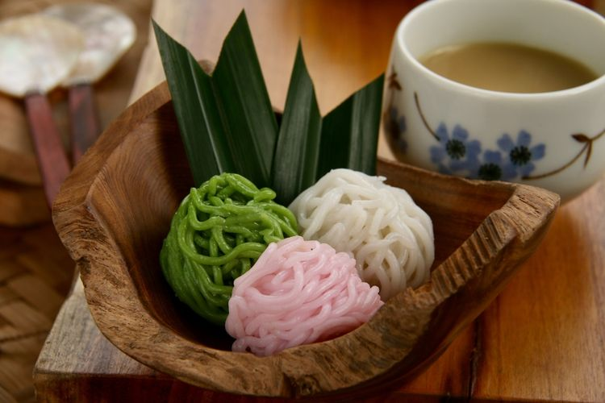

Resep kue basah Putu Mayang

Bahan-Bahan:
- 225 g tepung beras
- 75 g tepung tapioka
- 1/2 sdt garam
- 650 ml santan
- Secukupnya pewarna makanan
Bahan kuah kinca :
- 200 g gula merah
- 50 g gula pasir
- 1/2 sdt garam
- 500 ml santan
- 2 lembar daun pandan ikat
- 1 sdm maizena dilarutkan dengan sedikit air
Langkah-Langkah:
- Langkah 1 :
- Campur tepung beras dengan garam..tambahkan santan..aduk hingga rata
- Langkah 2 :
- Masak dengan api kecil hingga menyatu dan kental..setelah kental..matikan api..aduk terus hingga licin
- Langkah 3 :
- Tambahkan tapioka..aduk lagi hingga rata
- Langkah 4 :
- Bagi adonan menjadi beberapa bagian..beri masing-masing bagian dengan warna yang berbeda..lalu cetak hingga adonan habis
- Langkah 5 :
- Taruh hasil cetakan diatas daun pisang yang telah diolesi minyak goreng..lalu kukus dalam dandang dengan api kecil yang sebelumnya sudah dipanaskan selama +/- 10 menit
- Langkah 6 :
- Buat kuah kinca..campur semua bahan kecuali maizena..rebus sambil terus diaduk hingga mendidih.. tambahkan larutan maizena..aduk hingga rata
- Langkah 7 :
- Penyajian : taruh beberapa putu mayang dalam piring/mangkok..siram dengan kuah kinca..siap dihidangkan